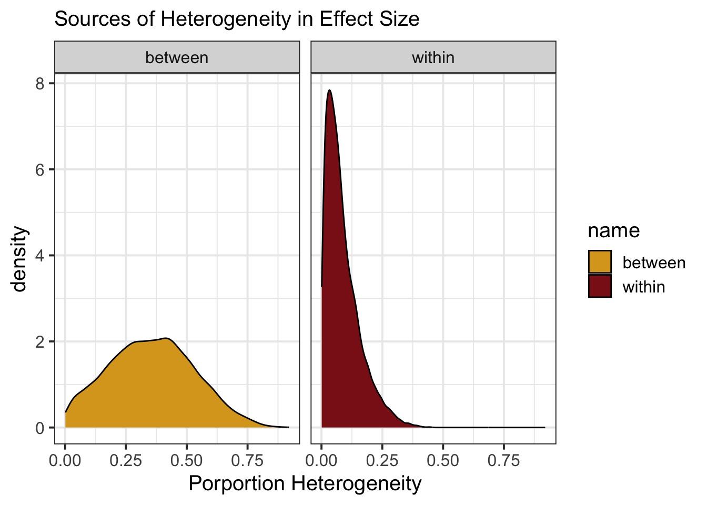
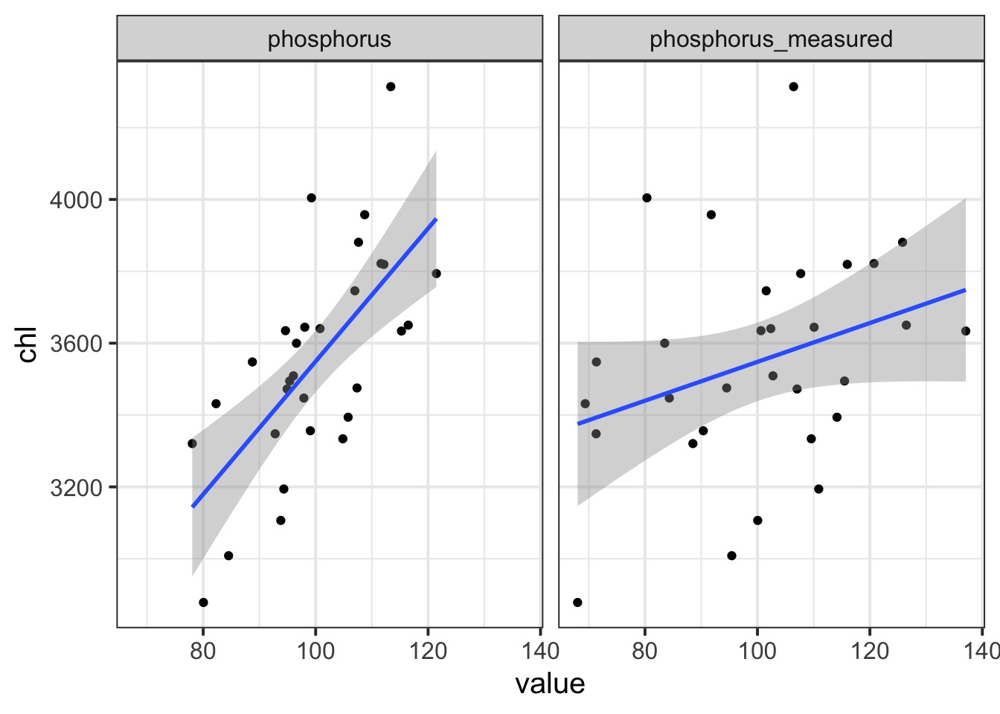

Missing Data
Three Major Missing Data Problems
Meta-analysis as a missing data problem
Measurement error in X
Missing datapoints
What is Meta-Analysis
- Let’s say you want to summarize results across many studies.
- Hey, that’s very Bayesian - what is the full posterior?!
- BUT, all you have is means and standard deviations of results.
- Folk often won’t share raw data.
- Or it’s old! No longer exists!
- Folk often won’t share raw data.
- Fundamentally, the data is missing.
- BUT, we have information about it to calculate an effect size
Effect Sizes
For Group A, you know a mean and SD
For Group B, you know a mean and SD
You can then calculate an effect size
- eg, log ratio = ln(A) - ln(B)
- Hedge’s G = (A-B)/pooled SD
- etc…
Can you Survive Extinction?
Does Broad v. Narrow Distribution Size Matter?
Gaitán-Espitia et al. 2016
Calculating an Effect Size: Log Odds Ratio
s1 species survive an event in group 1, and e1 go extinct.
So p1 fraction of species survived an event in group 1 and p2 in group 2
\[lnor = \frac{p1/(1-p1)}{p2/(1-p2)}\]
\[var \: lnor = \sqrt{1/s_1 + 1/e_1 + 1/s_2 + 1/e_2}\]
Summarizing Studies
Data from Orzechowski et al. 2015 Global Change Biology
Are these All Just Samples from One Effect Size?
Nakagawa et al. 2017
Fixed/Common Effect Meta-Analysis
Likelihood: \[y_i \sim N(\mu, \sigma_i)\]
Prior: \[\mu \sim N(0,1)\]
We have observed \(\sigma_i\).
Bayesian Fit of a FE Meta-Analysis
What if the Effect Varies from Study to Study?
Nakagawa et al. 2017
Random Effects Meta-Analysis
Likelihood: \[y_i \sim N(\theta_i, \sigma_i)\]
Random Effects: \[\theta_i \sim N(\mu, \tau)\]
Prior: \[\mu \sim N(0,1)\] \[\tau \sim halfN(0,2)\]
We have observed \(\sigma_i\) and \(y_i\).
Bayesian Fit of a RE Meta-Analysis
re_meta <- ulam(
alist(
# likelihood
lnorReg ~ dnorm(theta[measurement_id], sd_lnor),
# RE
theta[measurement_id] ~ dnorm(mu, tau),
# Prior
mu ~ dnorm(0, 1),
tau ~ dhalfnorm(0,2)
),
data = ext |>
select(lnorReg, vlnorReg) |>
mutate(sd_lnor = sqrt(vlnorReg),
measurement_id = 1:n()),
chains = 3, log_lik = TRUE
)Bayesian Fit of a RE Meta-Analysis using NCP
re_meta <- ulam(
alist(
# likelihood
lnorReg ~ dnorm(theta, sd_lnor),
# DGP
theta <- mu + measure_dev[measurement_id],
# RE
measure_dev[measurement_id] ~ dnorm(0, tau),
# Prior
mu ~ dnorm(0, 1),
tau ~ dhalfnorm(0,2)
),
data = ext |>
select(lnorReg, vlnorReg) |>
mutate(sd_lnor = sqrt(vlnorReg),
measurement_id = 1:n()),
chains = 3
)How do BLUPs compare to Means?
How Much Does and Effect Differ Between Studies?
What If Studies Have Multiple Measurements?
Nakagawa et al. 2017
Multilevel Meta-Analysis
Likelihood: \[y_{ij} \sim N(\theta_{ij}, \sigma_{ij})\]
Random Effects: \[\theta_{ij} \sim N(\psi_i, \omega_{i})\] \[\psi_{i} \sim N(\mu, \tau)\]
Prior: \[\mu \sim N(0,1)\] \[\omega \sim halfN(0,2)\] \[\tau \sim halfN(0,2)\]
We have observed \(\sigma_{ij}\) and \(y_{ij}\).
Bayesian Multilevel Meta-Analysis
multi_meta <- ulam(
alist(
# likelihood
lnorReg ~ dnorm(theta[measurement_id], sd_lnor),
# RE
theta[measurement_id] ~ dnorm(psi[study_id], omega),
psi[study_id] ~ dnorm(mu, tau),
# Prior
mu ~ dnorm(0, 1),
tau ~ dhalfnorm(0,2),
omega ~ dhalfnorm(0,2)
),
data = ext |>
select(lnorReg, vlnorReg, study.ID) |>
mutate(sd_lnor = sqrt(vlnorReg),
measurement_id = 1:n(),
study_id = as.numeric(as.factor(study.ID))),
chains = 4, log_lik = TRUE, iter = 4e3
)NCP Bayesian Multilevel Meta-Analysis
multi_meta <- ulam(
alist(
# likelihood
lnorReg ~ dnorm(theta[measurement_id], sd_lnor),
# DGP
theta <- mu + measure_dev[measurement_id] + study_dev[study_id],
# RE
measure_dev[measurement_id] ~ dnorm(0, omega),
study_dev[study_id] ~ dnorm(0, tau),
# Prior
mu ~ dnorm(0, 1),
tau ~ dhalfnorm(0,2),
omega ~ dhalfnorm(0,2)
),
data = ext |>
select(lnorReg, vlnorReg, study.ID) |>
mutate(sd_lnor = sqrt(vlnorReg),
measurement_id = 1:n(),
study_id = as.numeric(as.factor(study.ID))),
chains = 4, log_lik = TRUE, iter = 4e3
)How Much Does and Effect Differ Between Studies?
Bayesian Meta-Analysis
When you want to know the state of a field, META-ANALYSIS!
We can estimate relationships when we have one more more source of uncertainty in Y.
Ask yourself, what are my sources of variation.
- Meta-regrssion is possible, too!
It’s distributions all the way down (NCP can help)!
–>
Three Major Missing Data Problems
Meta-analysis as a missing data problem
Measurement error in X
Missing datapoints
Does Measurement Error in Y Bias our Estimates?
Likelihood: \[Y_i \sim N(\hat{Y_i}, \sigma)\]
DGP: \[\hat{Y_i} = \alpha + \beta X_i\]
Oh wait! The measurement error is already there - \(\sigma\) has both process error AND measurement error!
Does Measurement Error in Y Bias our Estimates?
Old School notation: \[Y_i = \alpha + \beta X_i + \epsilon_i + \gamma_i\]
Error is now decomposed into process error (\(\epsilon_i\)) and measurement error (\(\gamma_i\)).
Both are normally distributed. Does not affect bias in estimate of \(\beta\)
Does Measurement Error in X Bias our Estimates?
Likelihood: \[Y_i \sim N(\hat{Y_i}, \sigma)\]
DGP in our Model: \[\hat{Y_i} = \alpha + \beta_1 X_i + \beta_1 \nu_i\]
Where, \(\nu_i \sim N(0, \tau)\)
Our estimate of \(\beta_1\) is biased by \(\nu_i\)
What Does Measurement Error Do

Solution
What we Want
Likelihood: \[Y_i \sim N(\hat{Y_i}, \sigma)\]
Measurement Error in X: \[X_i \sim N(\hat{X_i}, \tau)\]
DGP in our Model: \[\hat{Y_i} = \alpha + \beta_1 \hat{X_i}\]
Example: Lakes and Phosphorus Simulation from Biggs et al. 2009
Our Model
Likelihood: \[chl_i \sim N(\hat{chl_i}, \sigma)\]
Measurement Error in X: \[P_i \sim N(\hat{P_i}, \tau)\]
DGP in our Model: \[\hat{chl_i} = \alpha + \beta_1 \hat{P_i}\]
How do we Fit This?
d <- lake_dat |> select(chl, phosphorus_measured) |>
mutate(chl_s = standardize(chl),
phosphorus_measured_s = standardize(phosphorus_measured),
idx = 1:n())
chl_fit <- ulam(
alist(
# likelihood
chl_s ~ dnorm(chl_hat_s, sigma),
# ME
phosphorus_measured_s ~ dnorm(phosphorus_s[idx], tau),
phosphorus_s[idx] ~ dnorm( 0, 10 ),
# DGP
chl_hat_s <- a + b*phosphorus_s[idx],
# Priors
a ~ dnorm(0,1),
b ~ dnorm(0,1),
sigma ~ dhalfnorm(0,2),
tau ~ dhalfnorm(0,10)
),
data = d,
chains = 3, iter = 6e3)Imputed versus Measured Phosphorus Values
Comparison of Slopes with Versus Without Measurement Error
Going from Standardized to Unstandardized Coefficients
\[b_{std} = b_{unstd} * sd(x)/sd(y)\]
\[b_{unstd} = b_{nstd} * sd(y)/sd(x)\]
\[sd(x_{true}) = sd(x_{with\: error})*\sqrt{1-\tau^2}\]
So on an Unstandardized Scale
model mean sd 5.5% 94.5%
1 True fit 18.182219 3.606099 0.45114870 0.8698756
2 Naieve fit 5.258769 2.822203 0.04396663 0.5739587
3 Corrected Fit NaN NaN 0.02855949 0.5823006Take-Aways
- Measurement error can bias coefficient estimates.
- This is a HUGE problem
- But, it doesn’t bias fit as much in some cases.
- More error, potentially more bias, particularly if it is not random.
- What are you seeking to ask? What is important for your project?
Three Major Missing Data Problems
Meta-analysis as a missing data problem
Measurement error in X
Missing datapoints
Previously, We Removed Missing Data from Monkies and Milk

Different Ways for Data to be Missing
Monkey Prep
A Missing Monkey Model
What were the Values?
mean sd 5.5% 94.5% rhat ess_bulk
nu -0.04714869 0.2049979 -0.37098057 0.2823604 1.0010665 1683.4534
a 0.02805418 0.1626065 -0.22538692 0.2841390 1.0003893 2373.1851
bM -0.53353005 0.2077682 -0.84813701 -0.1813322 1.0029487 1171.7342
bB 0.49134010 0.2457367 0.07581845 0.8544105 1.0014550 832.7026
sigma_B 1.01533131 0.1754819 0.77362509 1.3229134 1.0004121 1400.3242
sigma 0.84625477 0.1523247 0.63517489 1.1195761 1.0014497 1122.4521
B_impute[1] -0.57758106 0.8857533 -1.92132945 0.8589375 0.9997388 1772.5683
B_impute[2] -0.67251768 0.9602740 -2.17094245 0.8504497 1.0006213 2114.2284
B_impute[3] -0.69251942 0.9334207 -2.13525580 0.8012555 1.0026442 2013.6329
B_impute[4] -0.26664019 0.8955270 -1.68006795 1.2096898 0.9999199 2595.1109
B_impute[5] 0.46873248 0.9290779 -1.02415665 1.9263149 1.0010083 2607.2185
B_impute[6] -0.18896418 0.9149612 -1.60841325 1.2467667 1.0014501 2351.7854
B_impute[7] 0.16062658 0.9331044 -1.31401140 1.6316326 1.0014329 2999.6736
B_impute[8] 0.24145252 0.9161032 -1.20155615 1.6830962 1.0018687 2749.1803
B_impute[9] 0.50535876 0.9185386 -0.94126239 1.9197811 1.0010959 2302.9500
B_impute[10] -0.43405382 0.9102278 -1.85549965 1.0841341 1.0040564 2474.1664
B_impute[11] -0.28032590 0.9056276 -1.71838520 1.1071042 0.9995017 2894.9464
B_impute[12] 0.14044318 0.9248727 -1.37572560 1.5707976 1.0025727 2640.2179Imputing Increases Precision
Missing Data Extravaganza
We can impute data!
It’s all just distributions, anyway
But, be wary of the structure of missingness and how observation error enters the fray